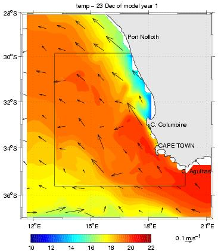

ROMS_AGRIF / ROMSTOOLS
A Regional Oceanic Modeling System with mesh refinement,
pre- and post-processing tools
Over the last several years, we have developed at UCLA, Rutgers
University and IRD a three-dimensional numerical oceanic model
intended for simulating currents, ecosystems, biogeochemical cycles,
and sediment movement in various coastal regions. It is called the
Regional Oceanic Modeling System (ROMS). This IRD version of the code,
ROMS_AGRIF, makes use of the AGRIF grid refinement procedure
developed at the LJK-IMAG and is accompanied by a powerful toolbox for
ROMS pre- and post-processing: ROMSTOOLS.
We encourage you to register at
<<<<<<< .mine
<<<<<<< .mine
the roms_agrif users mailing list (Low volume mailing list)
ROMS_AGRIF is based on the Regional Ocean Modeling System (ROMS) and
has benefited from developments made by the ROMS community. If not
done yet, we encourage you to also register at the official ROMS website.
NEWS :
- June 2011: WOA2009 and corrected WOAPISCES databases available in download section
- April 2011: ROMS_AGRIF and ROMSTOOLS patches in download section


Acknowledgements:
Roms_Agrif is the fruit of a collaborative work between IRD (Institut de Recherche pour le
Developpement; P. Marchesiello, P. Penven, G. Cambon), INRIA (Institut National de Recherche en Informatique
et en Automatique, LJK-IMAG; Laurent Debreu), and UCLA (Coastal Center of the Institute of the
Environment; J.C. McWilliams, A. Shchepetkin, F. Lemarié, H. Frenzel).
Contacts:
Gildas Cambon
Institut de Recherche pour le Developpement
LEGOS
14 Avenue Edouard Belin
31401 Toulouse Cedex 9
FRANCE
Gildas.Cambon*AT*ird.fr
Laurent Debreu
INRIA
51 rue des Mathematiques
38041 Grenoble Cedex 9
FRANCE
Laurent.Debreu*AT*inria.fr
Patrick Marchesiello
Institut de Recherche pour le Developpement
LEGOS
14 Avenue Edouard Belin
31401 Toulouse Cedex 9
FRANCE
Pierrick Penven
Institut de Recherche pour le Developpement
LPO
Centre IRD de Bretagne
B.P. 70 - 29280 Plouzane
FRANCE